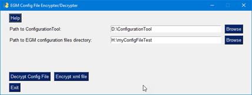
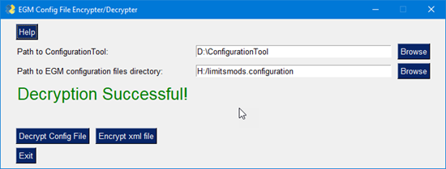
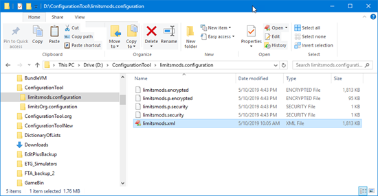
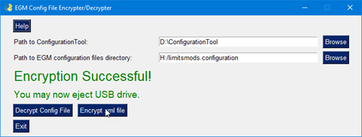

Setup the UI Tool
The UI Tool is the Windows version of the Configuration Tool. It takes the tedium out of extracting, decrypting, decoding, and encryption of EGM configuration data.
Make sure we have first set up the ConfigurationTool, as described above.
The UI tool is very simple to use, with a minimal interface, and requiring only a couple of mouse-clicks to use.- Download EgmConfigEnDecrypter.exe from //engfile6/Transfer/PublicDrop/Arno
- EgmConfigEnDecrypter.exe is a stand-alone, self-contained executable, so you can copy it to wherever you like.

Encryption/Decryption Workflow
The assignment is to modify configuration data on an EGM. If there are a lot of modifications to make, it can be faster to make the mods on a local computer instead. To do that, you can export the configuration data to a USB drive and transport it to the PC. The data is encrypted though, so there are some processes which need to be executed first. The following is the workflow to gather configuration data, modify it, and replace the data on the EGM with the new configuration.
- Go to the target EGM and insert the E-Key
- Navigate to:
- Setup
- Import & Export
- Export
- USB - OK
- At the USB not found message, insert a USB drive
- Give the configuration a name of your choice. In this example, I wil call it limitsmods
- Wait for the Configuration exported successfully message, then remove the USB drive
- Insert the USB drive into your PC
- With Windows Explorer, navigate to the USB drive and verify that you have a limitsmods.configuration folder.
- That folder should contain 4 files:
- limitsmods.encrypted
- limitsmods.p.encrypted
- limitsmods.p.security
- limitsmods.security
- Navigate to where you installed EgmConfigEnDecrypter.exe and launch it. You should see the image above
- Click the Browse button on Path to ConfigurationTool and navigate to the folder that contains ConfigurationTool.exe if it is not in the default location.
- Click the Browse button on Path to EGM configuration files directory and navigate to the limitsmods.configuration folder on the USB stick that you inserted from the EGM.
- Click the Decrypt Config File button and observe the Decryption Successful! message.
- 
At this point you will find that you have the limitsmods.configuration folder inside your d:\ConfigurationTool folder, with the additions of a new .xml file. In our example case, it's called limitsmods.xml. You do not have to close the configuration tool.

Best practices would suggest that you make a copy of this .xml file, now, to compare your on-going changes against with, with something like Beyond Compare.
Take your modified configuration file and import it into an EGM
At this point we will assume that you have made your changes to the limitsmods.xml file and saved them using the same filename it was exported with. (do not change the filename from the original. Importing to an EGM will not work with a different filename).
- If you have closed the configuration tool UI, reopen it and reselect the proper locations.
- Click on the Encrypt button
- The appropriate files will be copied from the local drive back on to the USB drive.
- 
- At the Successful Decryption message, properly eject the USB drive
- Go back to the EGM:
- Insert the E-Key, if it had been removed.
- Setup
- Import & Export
- Import
- USB - OK
- At the USB not found message, insert a USB drive
- Select the configuration file from the list (if there's more than one) and click OK
- (if you did not follow the instructions properly, you will see a HMAC Mismatch message and will have to try again).
- Select the Game theme the config applies to.
- Check whether you want to clone serial settings if it displays (I haven't determined if it matters - I've tested both ways)
- Click OK, pull the USB drive and let the EGM reboot.
- You are done! At this point you can enter the menu and manually check that your changes have been made.